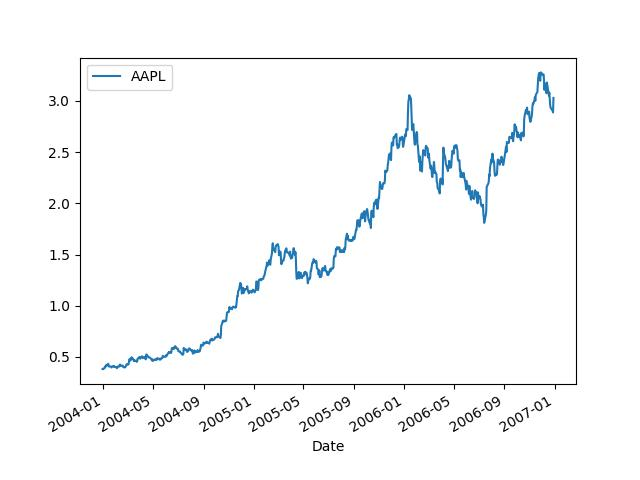

Sinyaller, Geriye Dönük Analiz, Performans
Elimizde bir zaman serisi var, bu seri bir finansal varlığın fiyat seviyesi olabilir, belki Apple senedidir, ilk gün 100 ikinci gün 102 olmuş, böyle gidiyor.
import pandas as pd
d = np.array([100,102,104.04,106.12,108.24,110.41])
Peki bu fiyat seviyeleri günlük hangi yüzde değişimlerine tekabül ediyor?
Bu hesabın bir yolu var, pct_change kullanabiliriz,
p = pd.Series(d)
print (list(p))
print (list(np.round(p.pct_change(),2)))
[100.0, 102.0, 104.04, 106.12, 108.24, 110.41]
[nan, 0.02, 0.02, 0.02, 0.02, 0.02]
Her gün yüzde 2'lik bir değişim varmış (bu yazı için veri uydururken sayıları ona göre ayarladık).
Şimdi sadece yüzde değişimleri ve başlangıç fiyat seviyesini kullanarak seriyi
tekrar üretebilir miydik? Tek yüzde değişimle bir sonraki sayıyı nasıl elde
ederiz? Mesela 100'den yüzde 2 değişimle sonraki değere geçeceğiz, kolay, 1
artı 0.02 yani 1.02 değerini 100 ile çarparız, sonraki sayı çıkar, 102. Bu
metotu diğer yüzde değişimler için kullanabiliriz. O zaman tüm fiyat
seviyelerini hesap için eldeki yüzde değişim listesine 1 sayısını eklersek,
1.02, 1.02, .. elde edilir, ve bu rakamları başta 100 ile, sonra birbirleri ile
çarparsak tüm fiyat listesini tekrar elde ederiz. Bir dizinin tüm öğelerinin
birer birer çarpılıp bunun kümülatif olarak gösterilmesini cumprod
halleder,
ret = p.pct_change()
100*np.cumprod(1+ret)
Out[1]:
0 NaN
1 102.00
2 104.04
3 106.12
4 108.24
5 110.41
dtype: float64
Üstteki hesabı bir al-tut stratejisinin performansı olarak ta görebiliriz bu durumda illa baştaki 100 değerini kullanmaya gerek yok, 100 yerine 1 dersek o zaman bu stratejiye koyulmuş 1 liranın, 1 doların ne kadar büyüyeceğini görmüş oluruz. 1 lira 2 lira olduysa mesela bu ikiye katlama demektir, performansın iyi olduğu sonucuna varabiliriz.
1*np.cumprod(1+ret)
Out[1]:
0 NaN
1 1.0200
2 1.0404
3 1.0612
4 1.0824
5 1.1041
dtype: float64
Yüzde değişimler, kumulatif çarpımlar ile uğraşmamızın bir sebebi var, portföy perfomansına bakarken herhangi bir strateji için gereken alım / satım "sinyallerini" kolayca dahil edebiliyoruz, ve stratejiyi tartarken bir zaman serisi üzerinden bunu yapabiliyoruz. Elde edilecek serinin istatistiki, matematiksel özellikleri vardır, ve bu özellikleri ek özet irdelemeler faydalı olur, mesela Sharpe oranı gibi.
Sinyalleri şöyle kullanabiliriz, bir varlığı belli bir zaman noktasında almış olmak 1 sinyali ile temsil edilir, varlığın elde olmaması ise 0 ile temsil edilir. O zaman kumulatif hesaptan önce tüm yüzde değişimleri sinyal vektörü ile çarparız, ondan sonra kumulatif hesap devreye girer. Eğer sinyal 1 ise o noktada yüzde değişim sıfıra iner, o getiri elde edilmemiş olur, kumulatif hesapta 1+0 = 1, yani hiç bir değişim yaratmaz. Eğer sinyal 1 ise 1 çarpı mesela yüzde 2 getiri yüzde 2 getirinin aktif olmuş olması demektir, o getiri kumulatif çarpıma etki eder.
signal = pd.Series(np.array([1,1,1,1,0,1]))
ret*signal
Out[1]:
0 NaN
1 0.020000
2 0.020000
3 0.019992
4 0.000000
5 0.020048
dtype: float64
signal = pd.Series(np.array([1,1,1,1,0,1]))
1*np.cumprod(1+(ret*signal))
Out[1]:
0 NaN
1 1.020000
2 1.040400
3 1.061200
4 1.061200
5 1.082475
dtype: float64
Örnek
Apple senedine bakalım,
import pandas as pd
df = pd.read_csv('../tser_008_data/AAPL.csv',index_col='Date',parse_dates=True)
df.plot()
plt.savefig('tser_011_sign_01.jpg')

Diyelim ki müneccim bir yatırımcı bu senede ne zaman alıp, satacağını bir şekilde biliyor. O 2005-06 civarındaki çıkış öncesi alıyor, o çıkışın tepesinde satıyor, sonra 2006-09'da tekrar geliyor, ve son düşüş öncesi yine çıkıyor. Bu arkadaşın alım / satım stratejisini 1 ve 0 sinyalleri ile temsil edebiliriz.
df['signal'] = 0
filt1 = (df.index > '2005-06-01') & (df.index < '2006-02-01')
df.loc[filt1,'signal'] = 1
filt2 = (df.index > '2006-09-01') & (df.index < '2007-01-01')
df.loc[filt2,'signal'] = 1
Stratejinin başarısı ne olur acaba?
df['ret'] = df.AAPL.pct_change()
cumret = np.cumprod(1+(df.ret*df.signal))
print (cumret.tail(4))
Date
2006-12-26 2.233475
2006-12-27 2.233750
2006-12-28 2.215938
2006-12-29 2.324721
dtype: float64
Tüm kumulatif seriye aslında ihtiyaç yok, son gelinen getiri noktası için,
np.prod(1+(df.ret*df.signal))
Out[1]: 2.3247214450625857
Yüzde 232 gibi bir artış var! Bu stratejiyi yıllık kazanca nasıl çeviririz? Eldeki getirinin hangi zaman dilimine tekabül ettiğine bakarız, ve bu getiriyi bir sene, yani 252 zaman dilimi (yıl içindeki iş günü miktarı), için ölçekleriz. Mesela eğer 50 gün için bir getiri $g$ hesaplamışsak, bu getiriyi yukarı ölçekleyip kabaca $g^5$ hesaplayabiliriz ve getiriyi tüm sene bazına yukarı ölçekleyebiliriz (çünkü $252/5 \approx 5$), sonra tüm sonuçtan bir çıkartırız daha önce eklenen 1 etkisini iptal etmek için. Eğer eldeki zaman serisi miktarı 252'den fazla ise alta ölçekleme de yapılabilirdi, $g^{1/2}$, $g^{1/5}$ gibi, ama bu hesaplar da yine matematiksel olarak doğrudur. Elde edilecek olan yıllık yüzde oranı (annual percentage rate), APR,
print ('APR', ((np.prod(1.+df.ret*df.signal))**(252./len(df.ret)))-1)
APR 0.32471861974412564
Getiri yıllık yüzde 32.47.
Eğer strateji üstteki kadar iyi olmasaydı, mesela yatırımcı 2005-06'da alım yapmış ama senette kalmış, sona kadar satmamış, bu durumda,
df = pd.read_csv('../tser_008_data/AAPL.csv',index_col='Date',parse_dates=True)
df['signal'] = 0
filt1 = (df.index > '2005-06-01')
df.loc[filt1,'signal'] = 1
df['ret'] = df.AAPL.pct_change()
print (np.prod(1+(df.ret*df.signal)))
print ('APR', ((np.prod(1.+df.ret*df.signal))**(252./len(df.ret)))-1)
2.105210500206348
APR 0.2816374105511763
Daha düşük bir getiri elde etmiş olacaktı.
[devam edecek]
Yukarı